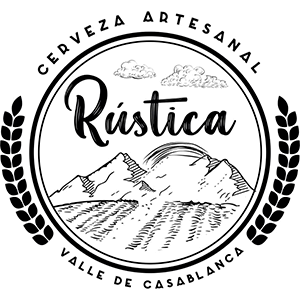

Valores
Los valores unicos hasta ahora, se reflejan por lo nueva que es la empresa, prontamente se distribuiran mas tipos de cervezas y mas variedad de tamaños
Valores: $1500 pesos la unidad (350 cc), Precio x Mayor sobre las 12 botellas|  | Rustica |
¿Qué cervezas son artesanales? Dentro de la variedad de estilos que existe en el mundo cervecero destacan cinco que han ido ganando adeptos entre los amantes de las artesanales. Nos referimos a las cervezas IPA, Porter, Amber, Pale Ale y el Stout. Conoce sus características y con qué platillos combinan mejor.
Para que una cerveza sea considerada artesanal, tiene que ser elaborada con ingredientes tradicionales o innovadores.
Nacida en el fecundo Valle de Casablanca. Rústica se caracteriza por tener un sabor y color único gracias a su elaboración tradicional que solo algunos sabrán diferenciar.
Ingredientes: Agua, Lúpulo, Cebada, Levadura. KM 3 Hacienda Lo Orozco. PRODUCTO SIN FILTRAR (el sedimento del fondo de la botella es producto de la elaboración de la cerveza artesanal).
Nuestra Tienda:
Somos una tienda en casa blanca dedicada exclusivamente a la venta de cervezas artesanales propias. Tenemos cerca de 6 cervezas distintas, de muy buena calidad
por ahora solo contamos con 3 tipos de cervezas a la venta y otras 3 en produccion. Por el momento somos una tienda física, se hacen ventas presencialmente con el cliente cuando visita nuestro local y se hacen entregas en el plan del gran valparaiso,
por ahora solo se reservan compras via whatsapp y por instagram.
Queremos expandir nuestras ventas a más personas que aún no conocen nuestro local, llegar a hacer repartos tanto dentro de la ciudad como a otras ciudades,
en todo Chile. Ubicados en km 3 Hacienda lo orozco,Casablanca como casa principal y tambien en el plan de valparaiso como lugar de entrega, Cervezeria Rustica.
Nuestra Historia:
Nuestro local fue fundado a fines de octubre de 2022. Los dueños somos Gonzalo y Andrea una pareja de dos Ingenieros Agrónomos que se conocieron estudiando Agronomía en Valdivia
y donde también nació el amor por las cervezas.
Hasta la actualidad ya hemos sido reconocidos por el público de Casa blanca y Valparaiso, teniendo muchos clientes que vuelven a ir todas las semanas, además fuimos beneficiarios de un fondo
Crece de Sercotec y aparecimos en un reportaje del diario El mercurio.
Nuestra Misión:
Somos la única tienda en la V region dedicada exclusivamente a la venta de cervezas artesanales en botella y la única con la más alta calidad en la región.
Nuestro objetivo es ofrecer la mejor cerveza que se adecué al gusto del cliente mediante una gran variedad y estilos junto a una orientación personalizada.
Privilegiamos la calidad de la cerveza ante todo y así poder recomendarla tranquilamente,
esto se respalda en base a recomendaciones de personas en el mismo rubro. Además se orienta al cliente en base a lo que busca desde la cerveza más ligera,
hasta la cerveza más amarga o con más grados alcohólicos.
Los valores unicos hasta ahora, se reflejan por lo nueva que es la empresa, prontamente se distribuiran mas tipos de cervezas y mas variedad de tamaños
Valores: $1500 pesos la unidad (350 cc), Precio x Mayor sobre las 12 botellas